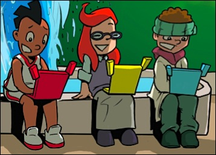

Society, technology and the times change so fast that
any fact, process or algorithm learnt at school today
becomes less useful beyond tomorrow.
The real skills that serve us are our ability to adapt, learn, apply the products of our learning, and participate in the challenges of our time. That doesn’t mean that facts are useless, nor that specific tools don’t matter. Unless we can demonstrate an ability to absorb and apply both we haven’t actually gained the ability to become effective in any given environment.
Kusasa is a curriculum-aligned learning system that can:
- be self taught, peer mentored, and evaluated without expert supervision;
- provide learners with tools for analysis which they can use in all of their learning areas;
- be an exercise machine for analytical and creative thinking.
The idea is not that learners gain tools they use for the rest of their lives. That’s not realistic. We don't use any specific theorems or other mathematics constructs from school today. Learners should use tools at school which help them develop a general ability to learn new tools. This general ability is the skill of analysis. It is the ability to break a complex problem into pieces, identify familiar patterns in the pieces, solve them using existing tools, and synthesize the results into a view or answer. We want to ensure that learners graduate with this ability, making them effective, successful, productive and fulfilled members of society.